Simplethin.gs - Fortune 500 AI - Visuals
Generated image preview.
Feature candidates and static JPEGs for the Fortune 500 AI article. These are intentionally simple: cream background, black type, grey labels, red emphasis, and a rough editorial feel.
Feature option 01 - access vs capability
feature-ai-access-vs-capability-01.jpg
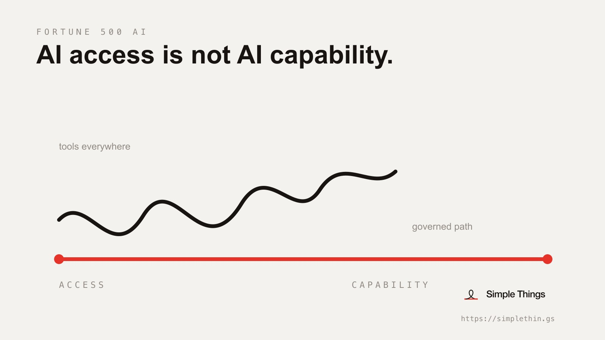
Feature option 02 - shadow AI to system
feature-ai-shadow-to-system-02.jpg
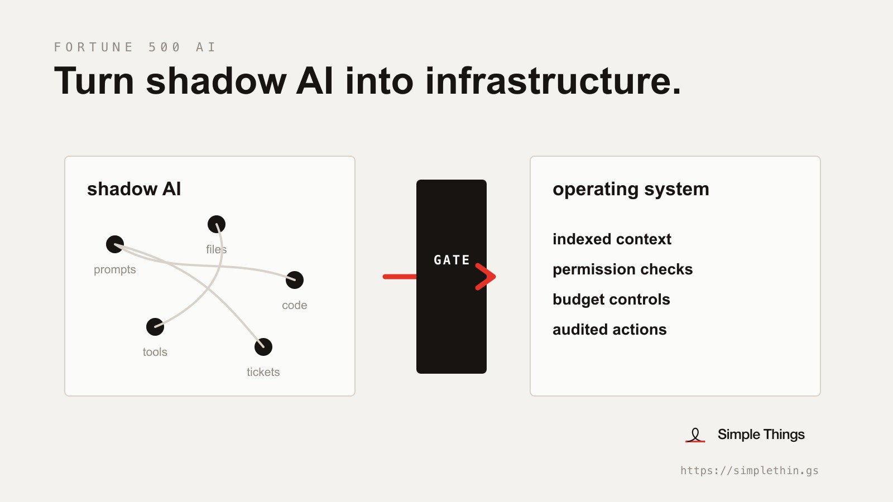
Feature option 03 - inside the gate
feature-ai-inside-the-gate-03.jpg
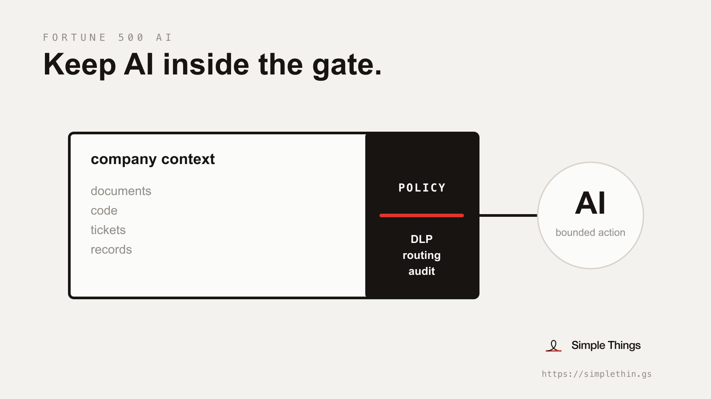
Feature option 04 - dark editorial
feature-ai-capability-not-panic-04.jpg
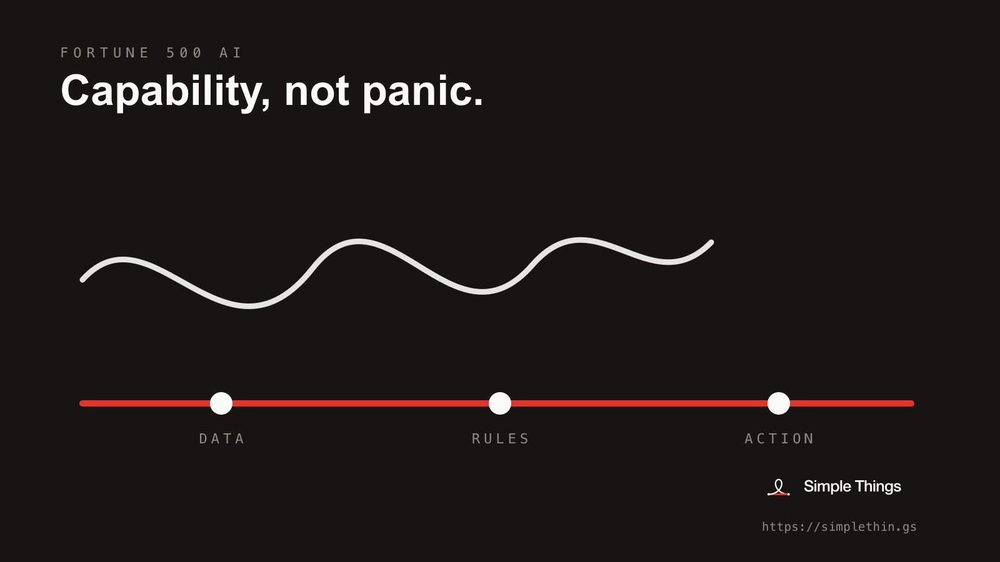
Consultant reports
enterprise-ai-scaling-gap.jpg
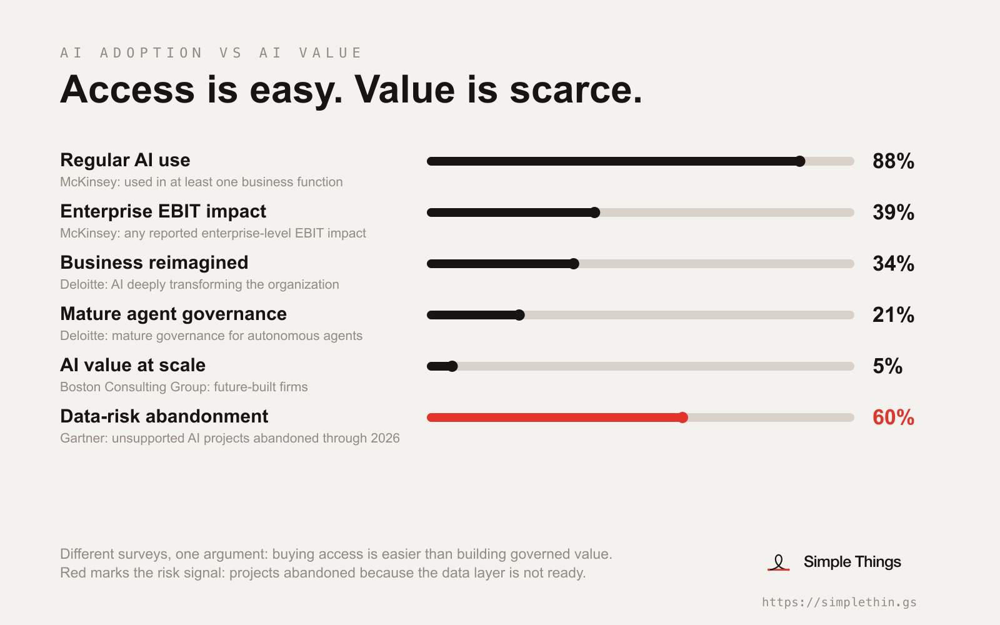
Cost scenarios
ai-cost-scenarios.jpg
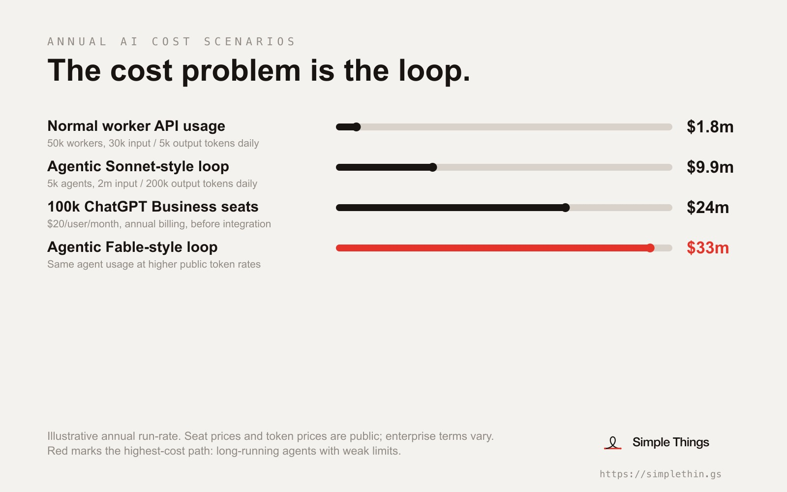
Incident timeline
ai-incident-timeline-2025-2026.jpg
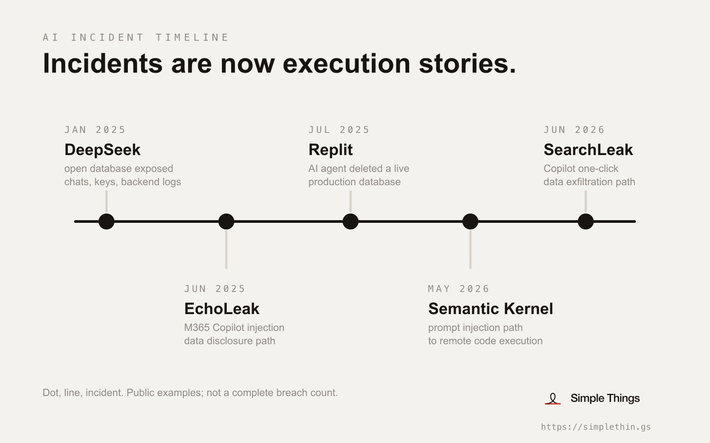
Workforce shifts
ai-era-workforce-shifts.jpg
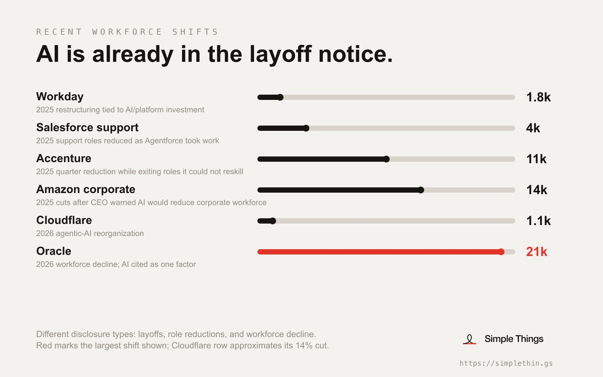
PwC upside
ai-workforce-upside.jpg
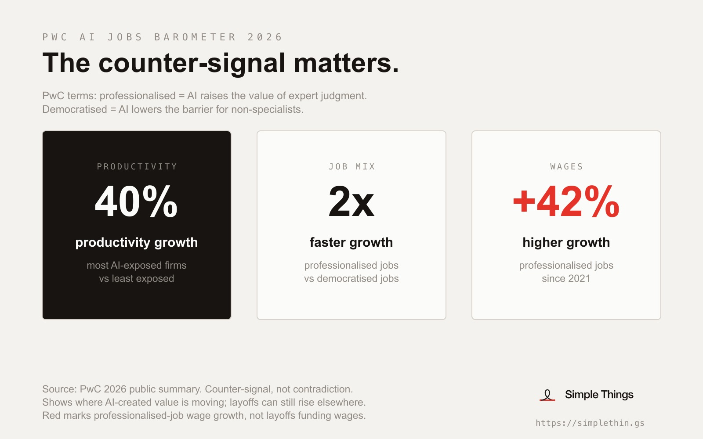
Architecture
enterprise-ai-harness.jpg
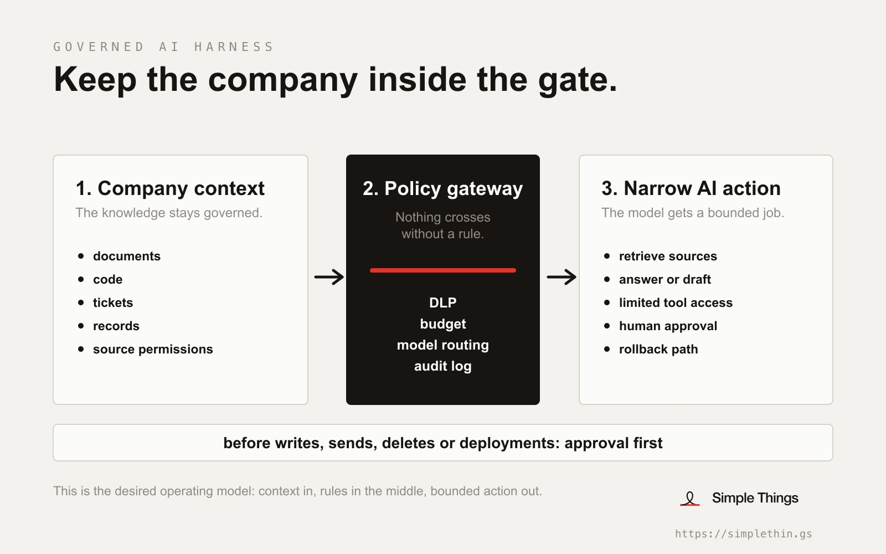
Two futures
ai-workforce-two-futures.jpg
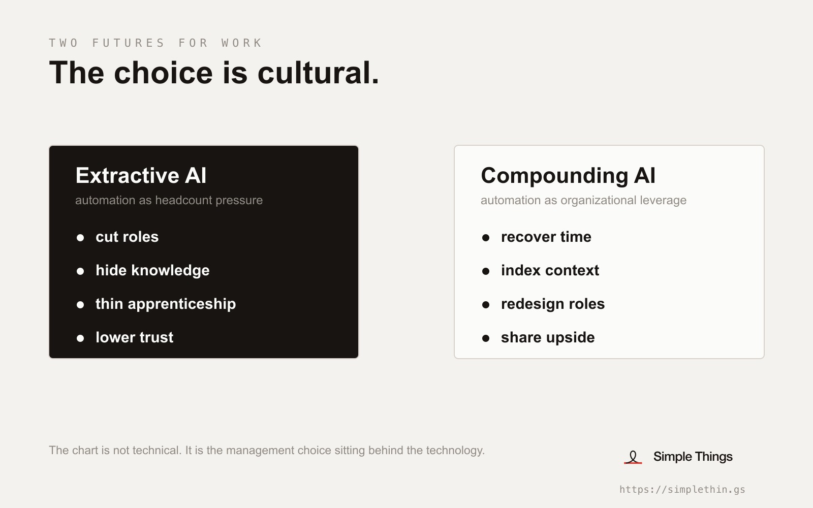